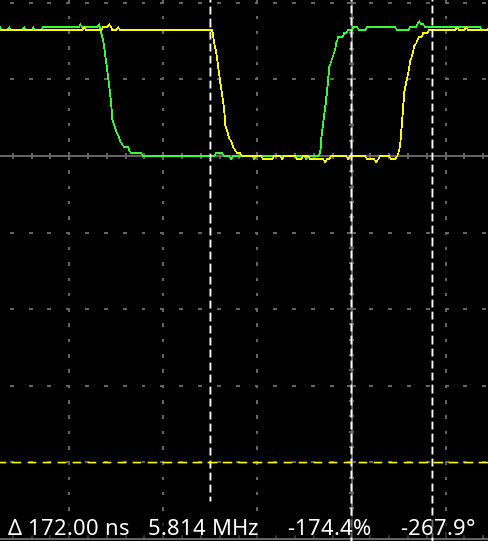

I recently got a Pine64 Ox64, a fast but confusing microcontroller board in the form factor of a Pi Pico. Because it's so fast, I wanted to see how quickly I could get it to respond to a GPIO interrupt.
This chip has 3 RISC-V cores, but only 2 that we need to worry about. The first is named "d0", and is a RV64IMAFCV core that runs at 480 MHz. However, it's only useful for selected tasks, because it doesn't connect to the full range of on-chip interrupts or on-chip memories. The second core is named "m0" and is a RV32IMAFCP CPU at 320 MHz, and has more peripheral connections than d0. (Basically, d0 is intended for multimedia processing, while m0 is intended for controlling the wireless features and the on-chip peripherals.)
This means is that you have to use the slightly slower, 32-bit-only core for GPIO interaction.
A common way to measure interrupt response time on microcontrollers is to cycle an output GPIO pin at fairly high speed, connect it to an interrupt input pin, then have the interrupt service routine set a third pin high. Then, if you monitor the first pin and the third pin on an oscilloscope, you can measure the amount of time the microcontroller took to process the interrupt.
I downloaded
the Bouffalo
SDK and set it up with
the configuration
instructions (these are only in Chinese, but translate
well). I used the version from Git hash cf71fcf,
which was HEAD at the time I cloned the repo.
The BL808 downloads code over UART, but Bouffalo somehow made a chip that isn't compatible with just every standard UART adapter. In particular, the FT232RL does not work. I used a Pi Pico with the firmware linked on the Ox64 wiki page.
There's no "create new project" command in the Bouffalo SDK, so I copied the "helloworld" example to another directory and used that as my project. Since we're only using the m0 core, I edited the Makefile to be:
SDK_DEMO_PATH ?= .
BL_SDK_BASE ?= <SDK base path>
export BL_SDK_BASE
CHIP ?= bl808
BOARD ?= bl808dk
CPU_ID ?= m0
CROSS_COMPILE ?= riscv64-unknown-elf-
# add custom cmake definition
#cmake_definition+=-Dxxx=sss
include $(BL_SDK_BASE)/project.build
This is just the default Makefile, slightly modified. Note
the CHIP, BOARD,
and CPU_ID definitions, which save me from having
to put these variables on the command line every time I
run make. (For the record, the Ox64 isn't exactly
the same as "bl808dk", but it's close enough for
this).
I then made a simple main.c:
#include <stdbool.h>
#include "bflb_mtimer.h"
#include "bflb_gpio.h"
#include "board.h"
#define GPIO_INTERRUPT_PIN (GPIO_PIN_26)
#define GPIO_SOURCE_PIN (GPIO_PIN_27)
#define GPIO_OUTPUT_PIN (GPIO_PIN_24)
struct bflb_device_s* gpio;
void read_mem_isr(int irq, void* arg) {
bflb_gpio_set(gpio, GPIO_OUTPUT_PIN);
bflb_gpio_int_clear(gpio, GPIO_INTERRUPT_PIN);
}
int main() {
board_init();
gpio = bflb_device_get_by_name("gpio");
bflb_gpio_int_init(gpio, GPIO_INTERRUPT_PIN, GPIO_INT_TRIG_MODE_SYNC_RISING_EDGE);
bflb_gpio_int_mask(gpio, GPIO_INTERRUPT_PIN, false); // false means enable
bflb_gpio_init(gpio, GPIO_SOURCE_PIN, GPIO_OUTPUT | GPIO_PULLUP | GPIO_SMT_EN | GPIO_DRV_0);
bflb_gpio_init(gpio, GPIO_OUTPUT_PIN, GPIO_OUTPUT | GPIO_PULLUP | GPIO_SMT_EN | GPIO_DRV_0);
bflb_irq_attach(gpio->irq_num, read_mem_isr, gpio);
bflb_irq_enable(gpio->irq_num);
while (1) {
bflb_gpio_set(gpio, GPIO_SOURCE_PIN); // trigger the interrupt (source is wired to trigger)
bflb_mtimer_delay_ms(1);
// reset both pins
bflb_gpio_reset(gpio, GPIO_SOURCE_PIN);
bflb_gpio_reset(gpio, GPIO_OUTPUT_PIN);
bflb_mtimer_delay_ms(1);
}
return 0;
}
GPIO_SOURCE_PIN is the pin that goes high
periodically, GPIO_INTERRUPT_PIN is the pin that
receives the interrupt, and GPIO_OUTPUT_PIN is the
pin that gets set high by the interrupt handler. We're just
using Bouffalo SDK functions for the first attempt.
To compile, just run make in the project
directory. To flash, run make flash COMX=<your serial
port>. Because the Makefile defines the chip, board, and
CPU ID, we don't need to specify these on the command line.
This is, quite simply, terrible. I wouldn't even expect 37 microseconds from a 20-year-old chip, let alone a 2ish-year old one. This image is a screenshot from my oscilloscope software, and the time at the bottom of the picture is the delta between the left and right white dashed lines. What you can't see in this picture is that the yellow rising edge jumped around a lot, and was on average closer to 45 microseconds.
Something's clearly wrong, let's try again.
Did you catch the problem in the code for the first attempt? Look at the interrupt configuration again:
bflb_gpio_int_init(gpio, GPIO_INTERRUPT_PIN, GPIO_INT_TRIG_MODE_SYNC_RISING_EDGE);The BL808 reference manual defines a total of 8 types of GPIO interrupts, but we're interested in only the rising edge ones.
The synchronous interrupt
(GPIO_INT_TRIG_MODE_SYNC_RISING_EDGE) will sync the
interrupt to a 32 kHz clock, which explains both the delay (1
cycle at 32 kHz = 31 microseconds) and the jitter (the time
between the rising edge and the next edge of the clock will
vary). The asynchronous interrupt will forward the interrupt as
fast as possible, without waiting for a clock.
Here's what I got when I changed the interrupt to async
(GPIO_INT_TRIG_MODE_ASYNC_RISING_EDGE):
596 nanoseconds. This is much, much better and far closer to what I would expect for a 320 MHz processor. There's also no more jitter, because there's no sync clock and probably also because the CPU's cache has kicked in.
Even though this is much better than my first attempt, I still
figured I could do better. One way to improve speed on every
microcontroller is to bypass whatever SDK libraries are in
use. On basically all platforms, there is at least one layer of
indirection between the interrupt vector and the actual
interrupt service routine, plus, using functions
like bflb_gpio_set() adds overhead because of the
function call and any error checks, if implemented. I decided to
modify the lowest level interrupt handler to set the pin high as
fast as possible.
Microcontroller SDKs usually provide basic startup and vector
table code to be compiled into your project. For the m0 core on
the BL808, these are stored in the Bouffalo SDK directory,
at drivers/soc/bl808/std/startup/m0. We want the
file vector.S, which has the RISC-V assembly code
for the function default_interrupt_handler. This
function is called by the RISC-V core itself when an interrupt
occurs, and saves registers before jumping to the SDK interrupt
handler.
With 3 lines of assembly, we can make this function set the
output GPIO pin high and optimize the interrupt response as much
as possible. Place these three lines just beneath the default_interrupt_handler: label:
li t0, 0x20000aec // location of register gpio_cfg138
li t1, 0x1000000 // set pin 24 high
sw t1, 0(t0)
(My syntax highlighter doesn't
have a RISC-V assembly mode!) This code loads the address of
the gpio_cfg138 register into temporary register 0
and the number 0x1000000 into temporary register 1,
then writes the contents of t1 to the memory location in
t0. gpio_cfg138 is a set/reset register on the
BL808 GPIO, so setting bits in this register causes GPIO pins to
go high and clearing bits causes pins to go
low. 0x1000000 is equal to 1 <<
24, which, when written to gpio_cfg138, will
make GPIO 24 go high.
I did not modify the interrupt service routine, because we still
need to clear the interrupt
with bflb_gpio_int_clear().
152 nanoseconds. The timing for this attempt was as stable as attempt 2.
There you have it. Like usual, if you get your hands dirty in assembly, you can make the computer go really fast.
I did this same interrupt speed test a while ago on an STM32F405 Feather running at full speed (168 MHz) under the Cube framework. The fastest I got this chip to respond was 172 ns:
I didn't even have to go into assembly to get this. The STM32Cube framework provides for a versatile interrupt handler, but you can also edit the actual interrupt vector function in C (no assembly required!). I just added a write to the GPIO set/reset register at the start of the interrupt vector function to get this speed.
I think that the BL808 could respond faster than what I got. The m0 core is almost twice as fast as the STM32F405 but is only a little bit faster at responding to interrupts. There are many factors that could cause this: caching, peripheral bus speeds, and the time it takes a specific CPU to respond to an interrupt, to name a few. Hopefully documentation improves for the BL808 and and I'll be able to create a more definitive description of the chip configuration for this experiment.
I hope you enjoyed this exploratory writeup. I'll try to update this post if I get any more cool microcontroller boards.